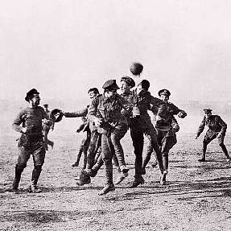

Начинается магический рождественско-новогодний променад, когда хочется быть ёлочным и великодушным. Это еще и годовщина поразительного исторического эпизода, так называемого «Рождественского перемирия» 1914 года.
Немцы, французы, русские, австро-венгры, британцы, турки, сербы и прочие к этому моменту крошили друг друга уже несколько месяцев. Убили и искалечили сотни тысяч людей, разрушили множество городов. И вдруг — джинглбеллз, джинглбеллз — приехал Санта Клаус на олене.
Стрельба на Западном фронте прекратилась. Солдаты с обеих сторон вылезли из траншей и начали общаться. Угощали лютых врагов сигаретами, дарили подарки. Даже устраивали футбольные матчи на нейтральной полосе.
Как будто у буйнопомешанных вдруг наступило прояснение рассудка. Продолжалось оно, правда, очень недолго. Скоро все снова рехнулись, впали в исступление и переубивали еще несколько миллионов человек.
А представьте себе мир, в котором Рождество никогда не заканчивается. И все нормальные, добрые, веселые, щедрые.
В общем так. Сегодня объявляйте рождественское прекращение огня. Временно амнистируйте всех неприятных вам людей. Брататься с ними необязательно, играть в футбол тоже, но по крайней мере заройте томагавки в снег. У зверей бывает «водяное перемирие», а у людей пусть будет «снежное».
Потерпите до Старого Нового Года. Потом продолжите.